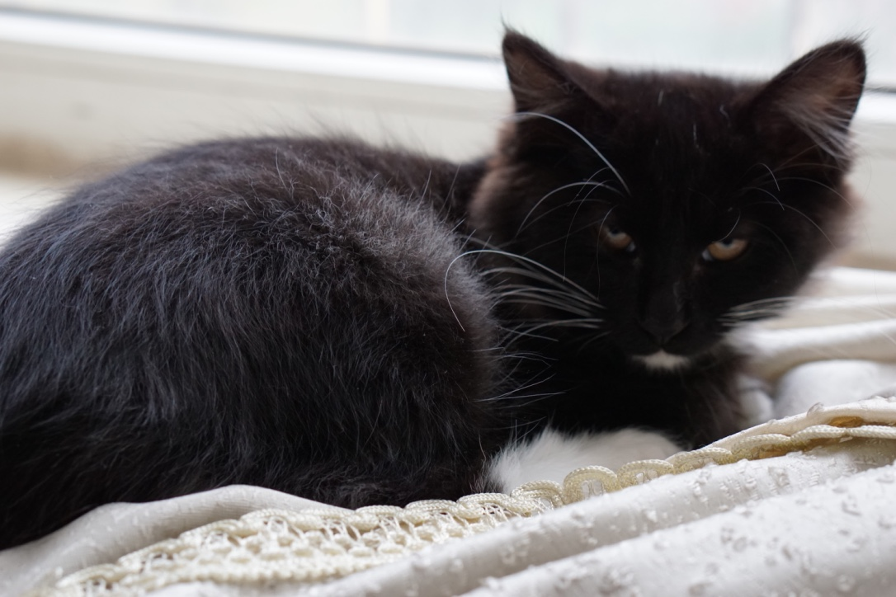
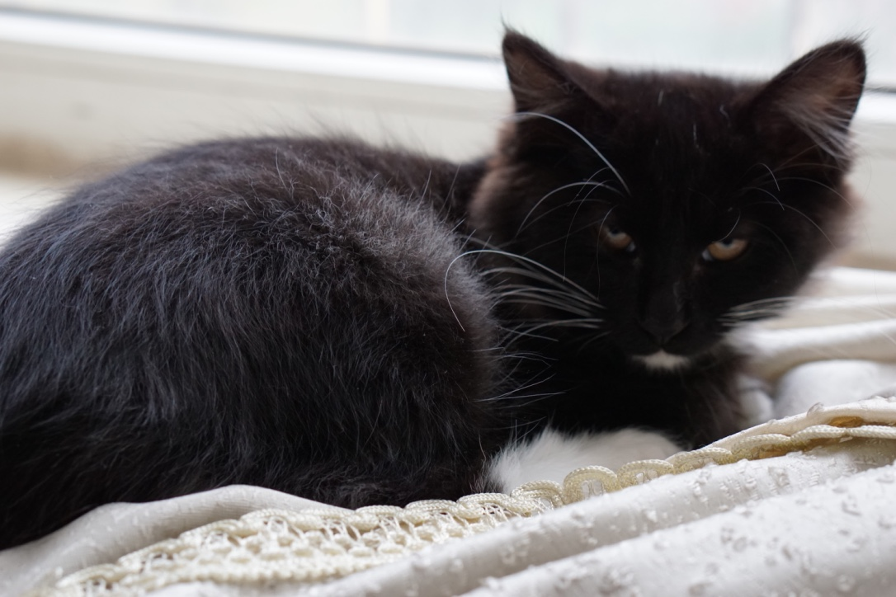

欢迎来到我的github主页
在下乃是小小码农，隐藏于千千万万的程序猿，工程狮，产品狗，设计猫中。希望可以在这片土地上耕耘出丰硕的果实。如果没有硕果累累，也希望可以造出一片景色。
What Are You Looking For,Bigger  不是薛定谔的猫，不是克尔苏加德的猫，也不是夜一。。。在下乃是小小码农，隐藏于千千万万的程序猿，工程狮，产品狗，设计猫中。希望可以在这片土地上耕耘出丰硕的果实。如果没有硕果累累，也希望可以造出一片景色。
What Are You Looking For,Bigger  不是薛定谔的猫，不是克尔苏加德的猫，也不是夜一。。。